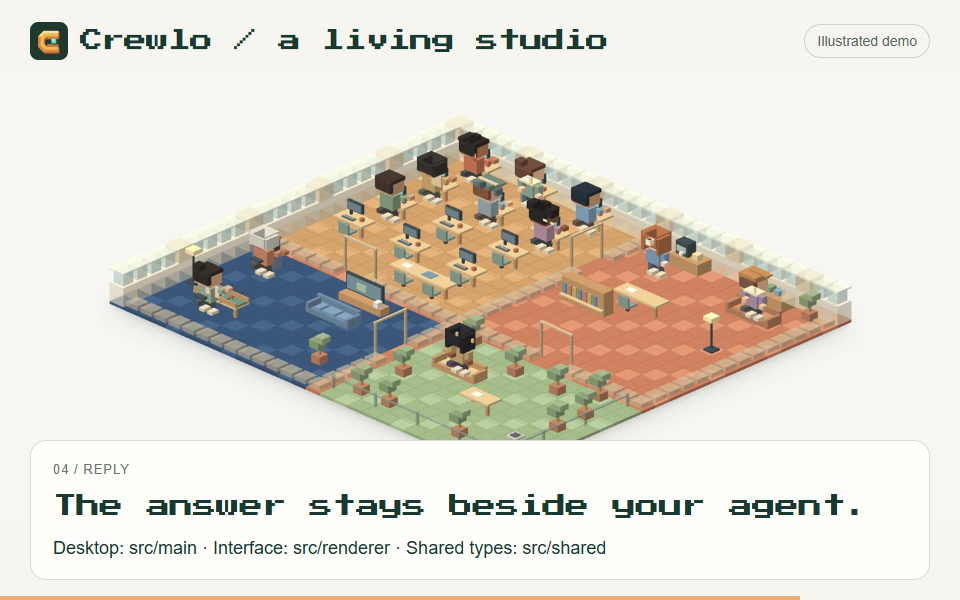

The studio is Crewlo’s most recognizable element. It should also help a visitor understand the product before they start admiring the details.
The design question is practical: can someone look at the scene and understand who has a mission, what is happening and where to find the response?
Give each movement a job
The illustrated mission follows a short sequence:
- A request appears.
- A small card travels towards the selected agent.
- The desk lights up and an activity becomes visible.
- The reply opens near the desk and stays still long enough to read.
The visitor can choose a sample mission and an agent, then replay the sequence. Keeping the story inside one scene makes it easier to follow the handoff.
These are local, scripted examples. Their purpose is to show the interaction clearly. Real agent activity depends on the connected session and the events its integration exposes.
Let the whole studio breathe
The scene begins with an overview. Desks and break areas give the characters context, while a gentle camera approach draws attention to the selected agent.
The illustrated workspace contains twelve characters, with working poses and small moments at the coffee or gaming areas. Those details make the scene feel inhabited. They do not represent twelve live sessions or prove that an agent is doing useful work.
Typing gestures are short and separated by pauses. A reply cue appears, then settles. Repeated movement should leave enough quiet space for text and selection to remain clear.
Keep the answer close to its agent
A character is an entry point to information. Selecting one should make its name, state, activity and latest reply easy to find together.
On desktop, Crewlo’s website places that compact profile beside the scene. On mobile, it sits immediately below the studio. The camera moves slightly towards the selection, while the readable profile carries the detail.
The illustrated profiles demonstrate the layout. In the application, the connected conversation and terminal remain the places to inspect actual output.
Use contrast to make the world readable
The visual language stays simple: ivory behind the scene, dark green for readable text and a warm accent for important actions. Pixel lettering marks the brand and small labels; longer explanations use a regular text face.
The same principle applies to the phones. Telegram has a dark interface; WhatsApp follows a light layout with green outgoing bubbles. Original line-art wallpapers carry small voxel references without making the messages difficult to read.
WhatsApp’s preview is explicitly experimental. A polished interface should not suggest that live delivery has already been verified.
Make motion optional
The website includes pause and replay controls. Loops stop when they leave the viewport or the browser tab is hidden. Visitors who prefer reduced motion get static, selectable steps.
That is part of the design: the mission, activity and reply must remain understandable without movement. Animation adds a path through the information; readable text preserves it.

What I want to improve next
The next useful step is to compare this presentation with observed sessions: which activity labels help, when a state becomes ambiguous and whether the latest reply stays easy to find on a small screen.
The studio earns its place when its visual cues help someone understand the work. That is the standard I want to keep using as Crewlo develops.